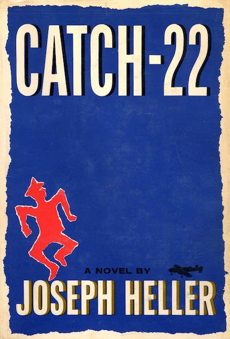
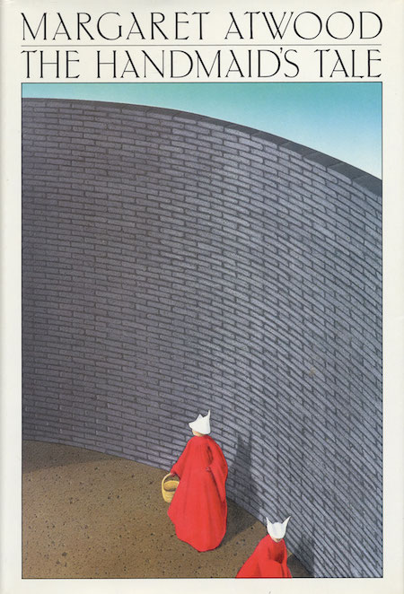
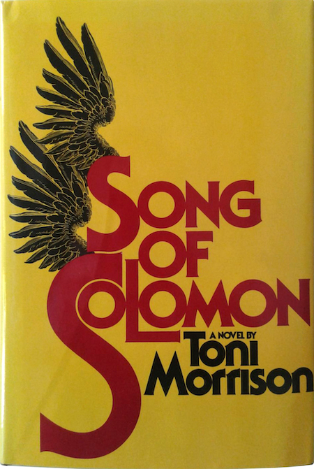

Jane Austen, Pride and Prejudice; cover design by Hugh Thomson, 1894

Joseph Heller, Catch-22; cover design by Paul Bacon, 1961J.D. Salinger, The Catcher in the Rye; cover design by E. Michael Mitchell, 1951Ray Bradbury, Fahrenheit 451; cover design by Joe Pernaciaro, illustration by Joseph Mugnain, 1953F. Scott Fitzgerald, The Great Gatsby; cover art by Francis Cugat, 1925

Margaret Atwood, The Handmaid’s Tale; cover design by Fred Marcellino for the first American edition, 1986

Toni Morrison, Song of Solomon; cover design by R. D. Scudellari, 1977Maya Angelou, I Know Why the Caged Bird Sings; cover design by Janet Halverson, 1969Ralph Ellison, Invisible Man; cover design by Edward McKnight Kauffer, 1952Bret Easton Ellis, American Psycho; cover art by Marshall Arisman, 1991